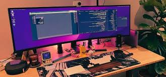

Oleh [Nama Anda] | Diposting pada 7 Oktober 2024
Selamat datang di postingan blog pertama saya! Dalam tulisan ini, saya akan berbagi beberapa wawasan tentang perjalanan saya dalam belajar pengembangan web. Ini adalah pengalaman yang menyenangkan sekaligus menantang, dan saya berharap cerita saya dapat menginspirasi Anda.
Saya mulai belajar HTML, CSS, dan JavaScript beberapa bulan yang lalu. Internet penuh dengan sumber daya yang luar biasa yang memudahkan untuk memahami konsep pengembangan web. Berikut adalah beberapa alat favorit saya:
Salah satu tantangan terbesar yang saya hadapi adalah memahami *box model* dalam CSS. Awalnya, saya bingung bagaimana cara kerja margin, padding, dan border secara bersamaan, tetapi setelah beberapa proyek, saya mulai mengerti.
Sejauh ini, saya telah membuat beberapa proyek pribadi, termasuk situs portofolio pribadi dan aplikasi *to-do list* sederhana. Anda bisa melihat proyek-proyek ini di profil GitHub saya.
Saya sangat bersemangat untuk melanjutkan perjalanan belajar saya dan membuat lebih banyak proyek. Pengembangan web adalah bidang yang dinamis, dan saya tidak sabar untuk melihat ke mana ia akan membawa saya selanjutnya!

Ini adalah foto dari setup coding saya saat ini! Saya suka menggunakan VS Code untuk menulis HTML, CSS, dan JavaScript.